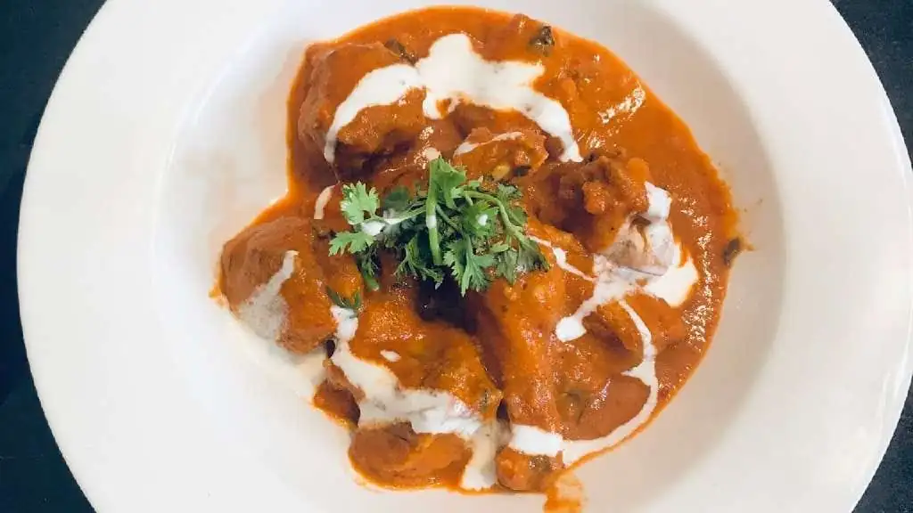

Butter Chicken Masala

Description
Butter chicken Masala is one of India’s most popular chicken recipes, a mild curry with a tomato-onion-cream base and boneless chicken pieces cooked in it to perfection.
Ingredients
- Boneless Chicken 1/2lb, cubed
- Butter Melted 2 tbsp
- Onions 2 medium-sized, minced
- Tomato 2 medium-sized, pureed
- Oil 2 tbsp
- Lemon juice 1 tbsp
- Garlic cloves 3, minced/crushed
- Ginger 1tbsp, minced/paste
- Garam Masala/Chicken Masala 1 tbsp
- Cream 4tbsp (or cashew paste)
- Chilli Powder 1 tbsp
- Turmeric powder 1/4 tbsp
- Crushed fenugreek leaves 1/4 tbsp
- 1 small bunch of coriander leaves / cilantro, for ganish
Steps
- In a bowl, mix chicken with salt, pepper, 1/2 tbsp ginger-garlic paste, 1/2 tbsp chili powder, turmeric powder, and lemon juice for the chicken marinade; let marinate for an hour.
- Roast the marinated chicken in an oven at medium temperature for 5 to 10 minutes. The chicken should be three-fourths done.
- Heat butter in a pan. Fry the onions until it turns translucent.
- Add garlic-ginger and sauté for a minute, then add garam masala. Cook for a few seconds making sure not to burn the paste.
- Add tomato puree, salt, and chili powder. Let simmer for about 5 minutes, occasionally stirring until sauce thickens and becomes a deep brown-red color.
- Add the marinated chicken, butter, fresh cream, the crushed fenugreek leaves, and sliced green chilies. Cook for an additional 5 to 10 min until the chicken is cooked.
- Adjust salt, garnish with the coriander leaves. Serve over rice or naan.
Home